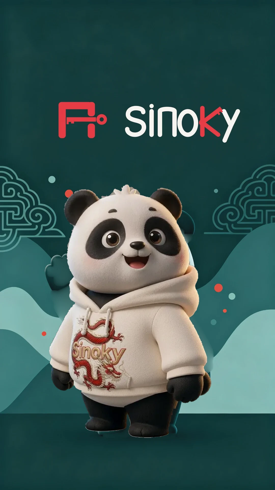

Sinoky is the key that unlocks real Chinese conversations — using only the words you'll actually say.
Pick your main goal — we'll prioritize the scenes that matter to you.
No judgment, no test. Just pick where you feel comfortable starting.
Sinoky listens as you speak and shows your tone curve in real time. Your voice stays on your device.
You can change this anytime. We'll respond to you in this style.
Here's your first scene — Day 1 of 14. Let's answer people.
Daily real-life phrases, tone training, and blind-speak practice. 100 survival lines, a few minutes a day.
🗣️ Blind-speak mode — we don't score your pronunciation yet. Just cover and say it 3×.
🔒 Privacy: your recording is used only to score that line. It is never saved, never shared, and never linked to you. Tap Score → say the line → tap Stop.
Pick a place. Learn the few lines that actually come up there.
Fourteen days, five minutes each. Finish them and you can survive in China.
Tap a tone to hear it. Then try the quiz.
Real speech bends the rules. Three changes locals actually make:
3 + 3 → 2 + 3 · nǐ + hǎo → ní hǎo (hello) — two dipping tones in a row: the first one rises.
yī → yì / yí · before a 4th tone it reads yí (yíyàng 一样), before 1st/2nd/3rd it reads yì (yìtiān 一天).
bù → bú · before a 4th tone it reads bú (búshì 不是 = is not).
No need to memorize — just notice them when you hear them.
Spaced repetition (1→3→7→15→30 days). Say the line in the scene, then mark it — that decides when you see it again.
Train one skill at a time. Everything you say is scored.
All the places and situations you can practise.
Read real-life Chinese from pictures. Tap a card to enlarge and hear it.
Your profile, streaks and settings.
Interface language, voice, and updates.
Last 14 days — red means you completed a challenge.
Your progress lives in this browser. Export it before clearing your data or switching phones — then paste it here to restore.
Writing engine: Hanzi Writer (MIT License). Stroke order data via the Make Me a Hanzi project, based on glyphs from Arphic Public Fonts, distributed under the Arphic Public License.
Pinyin: pinyin-pro (MIT License). On-device debug console: vConsole (MIT License, Tencent).
All pronunciation audio in Sinoky is original content.
Characters you starred for later review. Tap the speaker to hear one again.
Pick a mode and complete a prompt to start tracking.
Paste any Chinese text. Tap a word for pinyin, meaning and audio.
